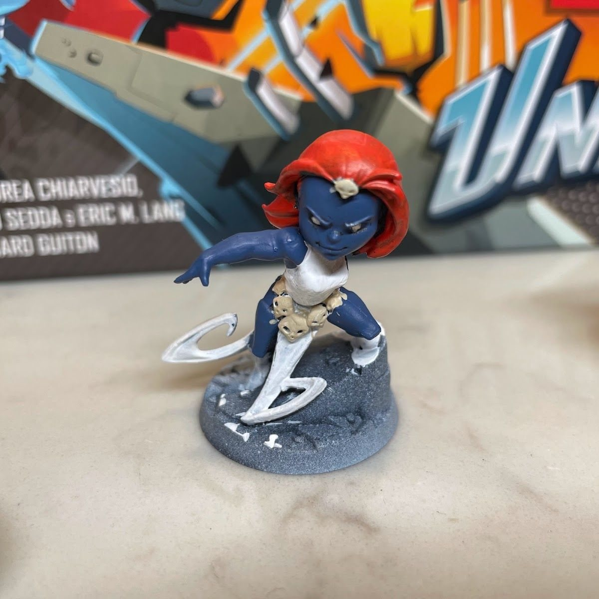

You don't always have a hobby slump. Sometimes you have a setup problem.
When I haven't painted in a while, it's rarely because I stopped liking it. It's usually because the paints are buried under something, the next step on the current mini is fuzzy, or the mini on the desk has entered the "I've been working on this forever" stage (hi, Devil Dinosaur). Starting feels heavier than the actual painting.
Why this matters
A slump is sometimes a motivation problem. More often, it's an activation-energy problem: the effort to get going is bigger than it needs to be. You can't force motivation, but you can make starting smaller.
The short version
- Start tiny. Don't plan to finish a mini. Put paint on one area.
- Set a 20-minute limit. A finite session is easier to say yes to.
- Do hobby-adjacent work. Clean up, organize, prime, prep bases.
- Revisit older projects. Look at concrete proof you've improved.
And a fifth, just as valid: take a break. The hobby should be easy to come back to, not an obligation.
1. Start tiny
Pick the smallest possible next step. Not "finish Moon Girl." Just "basecoat her boots." Once the brush is wet, you'll often keep going. And if you don't, you still moved the mini forward.
2. Set a 20-minute limit
Tell yourself it's twenty minutes, then you can stop with zero guilt. A set end time makes the session feel light. Often, twenty minutes turns into forty. On the days it doesn't, that's fine too.
3. Do hobby-adjacent work
When painting feels like too much, do something that makes the next painting session easier:
- Clear and wipe down the desk
- Clean or tape and sort brushes
- Clean mold lines on the next batch
- Prime a batch so future you has options
- Texture some bases
- Refill the wet palette and plan colors for the next mini
It still counts as hobby time, and it lowers the activation energy for next time.
4. Revisit older projects
Pull out something you painted a year ago. When I re-shot some of my earliest Marvel United minis, it was a fun time capsule of my painting journey, and honestly a great motivator: every brushstroke really did add up. A WIP roundup does something similar, a quick look at everything in progress reminds you how much is already underway.

The big-iture problem
Big projects are where slumps love to hide. The upside of a big mini is that it's an incredible centerpiece. The downside is that every time you think you're almost done, you find another area that needs highlights, cleanup or a little more love. The trick with those is to split them into small, finishable chunks, and let another quick mini jump the queue when you need a win.
What actually works for me
Honestly, slumps happen to me all the time. With two little kids and a bunch of other interests, the brushes sit untouched for stretches, and I don't always mind. The hobby is supposed to fit around life, not the other way around.
What pulls me back most reliably is a reason to use the minis. When my Blood Bowl league started up, playing with my team every week made me want to keep working on them: another player finished, the bases upgraded, a backup player built after a rough game. For me, a game on the calendar does more than any trick on this page.
If you're in a slump, look for your version of that: a league, a weekly game night, a friend who wants to play, or a painting buddy to check in with.
Make your setup do the work
- Leave the current mini out, with its paints next to it.
- Keep one clear spot on the desk where you can sit and paint immediately.
- Write the next step on a sticky note when you stop ("highlight the cape").
- Keep a small "quick win" mini ready for low-energy days.
Checklist
- What's the smallest possible next step?
- Timer set for 20 minutes
- If not painting, what prep can you do?
- One old mini out for perspective
- Permission to take a break
Next: make grabbing the right brush effortless with tape stripes.